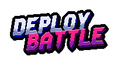
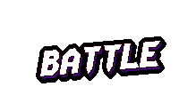
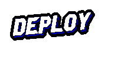
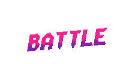

¿MANDO EN EL PC? PULSA START
JUEGA TÚ SOLO CONTRA 3 BOTS PARA ENTRAR
←→ MAPA · ↑↓ DIFICULTAD
PULSA UNA TECLA
PARA EMPEZAR




REINICIANDO TODO…
PARTIDA · SALA · MANDOS · CONEXIONES · TÚNEL
ESTE EQUIPO NO PUEDE DIBUJAR EL JUEGO EN 3D: EL NAVEGADOR NO TIENE ACELERACIÓN GRÁFICA (WEBGL).
ABRE chrome://gpu Y MIRA LA LÍNEA «WEBGL». SI ES UNA MÁQUINA VIRTUAL, ACTIVA LA ACELERACIÓN 3D (VIRTUALBOX: CONTROLADOR VMSVGA, HABILITAR ACELERACIÓN 3D, 128 MB DE VÍDEO) E INSTALA LOS GUEST ADDITIONS. DESPUÉS VUELVE A ARRANCAR CON ./iniciar.sh.
Dispara con tu tanque, haz rebotar las balas y acaba con tus rivales.
Juega contra gente de cualquier lugar o contra los bots.
CLIC · ENTER · A EN EL MANDO
MANTÉN R PARA REINICIAR TODO…